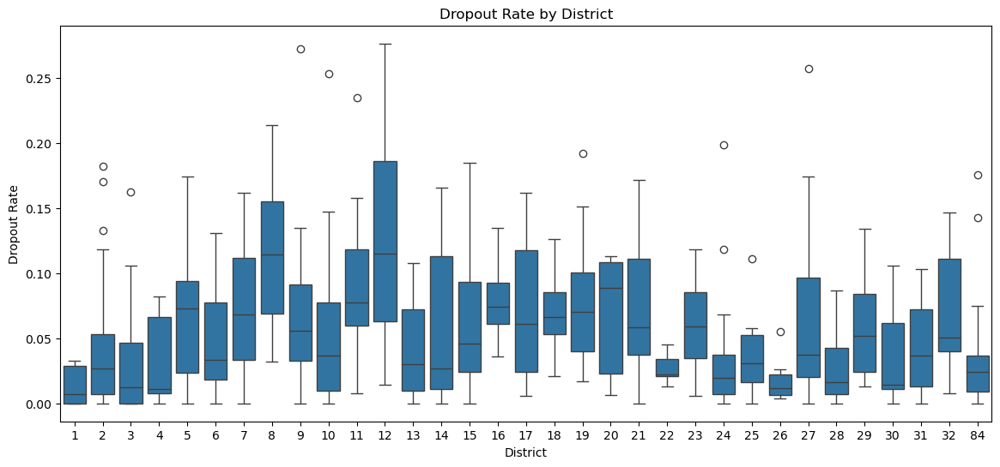

Exploratory Data Analysis (EDA) is a crucial beginning step in any data science project. On this page, we will examine distributions, analyze correlations, and uncover relationships between variables, ensuring the data is ready for the modeling phase. These insights will guide and shape our modeling approach. It is important to avoid modeling blindly and instead base our decisions on a thorough understanding of the data.
Code
import pandas as pdimport numpy as npimport matplotlib.pyplot as pltimport seaborn as snsimport textwrapimport plotly.express as pximport scipy.stats as statsfrom scipy.stats import ttest_ind, skew, kurtosis, f_onewayimport plotly.io as piopio.renderers.default ="notebook"
Percentage of Students Enrolled in an Advanced Math or Science Course
501.0
0.379705
0.144616
0.0000
0.282
0.379705
0.4840
0.800
Percentage of Students Enrolled in a College Credited Course
501.0
0.081681
0.137217
0.0000
0.000
0.021000
0.1150
0.923
Percentage of Students Enrolled in Any Advanced Course
501.0
0.571937
0.175886
0.0100
0.456
0.571937
0.6800
0.998
Years of principal experience at this school
501.0
6.889421
5.110596
0.0000
2.200
6.100000
10.2000
22.100
Percent of teachers with 3 or more years of experience
501.0
0.795406
0.133245
0.0800
0.737
0.821500
0.8820
1.000
Percent of Students Chronically Absent
501.0
0.417344
0.161082
0.0000
0.299
0.417344
0.5320
0.998
Teacher Attendance Rate
501.0
0.952104
0.027447
0.6500
0.950
0.957000
0.9630
0.991
Metric Value - Average Regents Score - English
501.0
69.576398
9.322389
29.1000
63.900
69.576398
75.0000
95.600
Metric Value - College and Career Preparatory Course Index
501.0
0.656958
0.239731
0.0070
0.487
0.667000
0.8750
1.000
Metric Value - College Persistence
501.0
0.485317
0.186830
0.0230
0.349
0.481000
0.6100
0.978
Rigorous Instruction - Element Score
501.0
3.473640
0.651435
1.8000
3.030
3.473640
3.8900
4.970
Collaborative Teachers - Element Score
501.0
3.612056
0.583369
1.5200
3.270
3.612056
3.9800
4.930
Supportive Environment - Element Score
501.0
3.577099
0.417602
2.0200
3.320
3.577099
3.8600
4.650
Effective School Leadership - Element Score
501.0
3.552355
0.570646
1.2800
3.270
3.560000
3.8900
4.860
Strong Family-Community Ties - Element Score
501.0
3.442936
0.612733
1.3800
3.100
3.442936
3.8400
4.830
Trust - Element Score
501.0
3.392435
0.600361
1.1100
3.050
3.450000
3.7900
4.930
Student Survey Response Rate
501.0
66.850299
22.891561
0.0000
58.000
71.000000
83.0000
100.000
Teacher Survey Response Rate
501.0
80.932136
17.471674
18.0000
72.000
84.000000
95.0000
100.000
Parent Survey Response Rate
501.0
34.069860
23.083958
0.0000
16.000
29.000000
48.0000
96.000
zip code
501.0
10715.345309
535.154739
10002.0000
10302.000
10468.000000
11217.0000
11694.000
Percent No High School (25+)
501.0
9.221000
5.305701
0.0000
5.200
8.400000
13.0000
25.900
Percent Bachelor's Degree or Higher (25+)
501.0
39.461876
22.259906
11.6000
21.600
33.900000
51.8000
94.500
Percent Language Other Than English at Home
501.0
46.561000
18.548678
14.0000
31.100
50.000000
60.2000
86.300
Percent Population with Disabilities
501.0
12.208800
4.074472
1.6000
9.000
11.700000
15.1000
21.300
Percent Foreign-Born Population
501.0
33.935329
11.466693
13.7000
25.400
31.600000
40.3000
70.900
Percent Households with Broadband Internet
501.0
86.407600
5.493089
71.1000
82.400
87.500000
89.6000
99.400
Median Household Income
501.0
78499.157685
41488.175277
26400.0000
43985.000
67489.000000
100190.0000
250001.000
Percent Households on SNAP/Food Stamps
501.0
23.808200
14.262966
0.0000
11.700
21.600000
34.0000
52.000
dropout_rate
501.0
5.358034
5.261403
0.0000
1.225
3.700000
7.7000
27.650
Graduation Rate
501.0
0.899607
0.072814
0.5795
0.853
0.908750
0.9595
1.000
Student Percent - Black and Hispanic
501.0
0.799110
0.213992
0.0450
0.729
0.891000
0.9490
1.000
Student Percent - Other
501.0
0.183108
0.206603
0.0000
0.041
0.094000
0.2520
0.947
District
501.0
25.339321
27.018524
1.0000
8.000
16.000000
28.0000
84.000
Percent College Ready based on SAT Math
501.0
0.152992
0.213768
0.0000
0.023
0.075000
0.1900
1.000
Average Grade 8 Proficiency
501.0
2.753443
0.436318
1.7550
2.475
2.680000
2.9550
4.270
CLEP_enrolled
501.0
0.017964
0.132954
0.0000
0.000
0.000000
0.0000
1.000
IB_enrolled
501.0
0.039920
0.195967
0.0000
0.000
0.000000
0.0000
1.000
NYCPS_college_prep_enrolled
501.0
0.083832
0.277413
0.0000
0.000
0.000000
0.0000
1.000
Took_ACT
501.0
0.223553
0.417042
0.0000
0.000
0.000000
0.0000
1.000
Transformations
View distribution of numerical features with histogram
Code
numerical_columns = df.select_dtypes(include=['float64']).columnsaxes = df[numerical_columns].hist(figsize=(30, 30))plt.tight_layout()# wrap the titles for readabilityfor ax, col inzip(axes.flatten(), numerical_columns): wrapped_title = textwrap.fill(col, width=30) ax.set_title(wrapped_title)plt.show()
Based on these distributions, we may want to transform some variables before modeling. Lets check the actual skews:
Code
skewness = df.apply(lambda col: skew(col) if col.dtype !='object'elseNone)
Code
skewness.loc[abs(skewness) >2]
Enrollment 3.738744
Percent Neither Female nor Male 5.155183
Percent English Language Learners 3.151075
Percent Overage / Undercredited 2.173497
Percentage of Students Enrolled in a College Credited Course 2.898833
Teacher Attendance Rate -5.282616
Percent College Ready based on SAT Math 2.235895
CLEP_enrolled 7.258441
IB_enrolled 4.700168
NYCPS_college_prep_enrolled 3.003344
dtype: float64
Code
df_transformed = df.copy()#log variables exhibiting the power lawdf_transformed['log_ELL'] = np.log(df_transformed['Percent English Language Learners'] +1)df_transformed['log_dropout_rate'] = np.log(df_transformed['dropout_rate'] +1)df_transformed['log_temp_housing'] = np.log(df_transformed['Percent in Temp Housing'] +1)df_transformed['log_percent_overage'] = np.log(df_transformed['Percent Overage / Undercredited'] +1)df_transformed['log_enrollment'] = np.log(df_transformed['Enrollment'] +1)df_transformed['log_nearby_student_distance'] = np.log(df_transformed['Nearby Student Distance (mi)'] +1)df_transformed['log_college_ready_SAT_math'] = np.log(df_transformed['Percent College Ready based on SAT Math'] +1)df_transformed['log_student_percent_other'] = np.log(df_transformed['Student Percent - Other'] +1)df_transformed['log_household_income'] = np.log(df_transformed['Median Household Income'] +1)
Code
numerical_columns = df_transformed.select_dtypes(include=['float64']).columnsaxes = df_transformed[numerical_columns].hist(figsize=(30, 30))plt.tight_layout()# wrap the titles for readabilityfor ax, col inzip(axes.flatten(), numerical_columns): wrapped_title = textwrap.fill(col, width=30) ax.set_title(wrapped_title)plt.show()
Multivariate Analysis
Visualize correlations with heatmap of all numeric columns
Lets try to uncover relationships between some of our target variables and features in the data
T-test
I will use a t test to evaluate if there is difference in the means of two groups
Dropout Rate vs Median Household Income
First, I want to see if there is a relationship between median household income and dropout rate. Looking at the graph, it appears that high median income is associated with low dropout rates. I will do a t-test to validate this assumption.
Code
sns.regplot(data=df, y='dropout_rate', x='Median Household Income', scatter_kws={'edgecolor': 'black'}, color='green')plt.title('Median Household Income vs Dropout Rate')plt.ylabel('Dropout Rate')plt.xlabel('Median Household Income')plt.show()
Null Hypothesis: There is no difference in mean median household income between schools with high dropout and low dropout rates.
Alternative Hypothesis: There is a difference in mean median household income between schools with high and low droppout rates
The p-value is 0.006, allowing us to reject the null hypothesis and conclude that there is significant difference in the mean median household income of schools with high dropout rates vs low dropout rates.
Chronic Absenteeism vs Supportive School Environment
Now I want to check the relationship between chronic absenteeism and a supportive school environment.
Code
sns.regplot(data=df, x='Percent of Students Chronically Absent', y='Supportive Environment - Element Score', scatter_kws={'edgecolor': 'black'}, color='purple')plt.title('Chronic Absenteeism vs School Support')plt.xlabel('Percent of Students Chronically Absent')plt.ylabel('Supportive Environment Score')plt.show()
It appears that lower supportive environment scores is associated with high rates of chronic absenteeism. We can do a t-test to validate the assumption that there is a difference in supportive score for schools with high and low chronic absenteeism
Code
high_chronic_absent = df[df['Percent of Students Chronically Absent'] >.4]['Supportive Environment - Element Score']low_chronic_absent = df[df['Percent of Students Chronically Absent'] <=.4]['Supportive Environment - Element Score']t_stat, p_value = ttest_ind(high_chronic_absent, low_chronic_absent)print(f't-value = {t_stat:.2f}, p-value = {p_value:.3f}')
t-value = -11.44, p-value = 0.000
Null Hypothesis: There is no difference in mean supportive environment score between schools with high chronic absenteeism and low chronic absenteeism.
Alternative Hypothesis: There is a difference in mean supportive environment score between schools with high chronic absenteeism and low chronic absenteeism.
The p-value is less than 0.05, allowing us to reject the null hypothesis and conclude that there is significant difference in the mean supportive environment element score of schools with high chronic absenteeism vs low chronic absenteeism.
ANOVA
An ANOVA test is used to evaluate if there is a difference in the means of more than two groups
Economic Need Index vs College Persistence Rates
The Economic Need Index estimates the percentage of the students at the school facing economic hardship.1 As shown by the box plot, it looks like low rates of college persistence is associated with high Economic Need Index. I will use an ANOVA test to see if there is a statistical difference in Economic Need Index between these three groups of persistence rates.
Code
df['college_persistence_ranking'] = pd.cut(df['Metric Value - College Persistence'], bins=3, labels=['Low','Medium','High'])
Code
sns.boxplot(data=df, x='college_persistence_ranking', y='Economic Need Index',color='lightblue')plt.title('Economic Need Index vs College Persistence Rates')plt.xlabel('College Persistence Rates')plt.ylabel('Economic Need Index')plt.show()
Code
anova_result = f_oneway( df[df['college_persistence_ranking']=='Low']['Economic Need Index'], df[df['college_persistence_ranking']=='Medium']['Economic Need Index'], df[df['college_persistence_ranking']=='High']['Economic Need Index'])print(f'F value = {anova_result.statistic:.2f}, p-value = {anova_result.pvalue:.3f}')
F value = 21.57, p-value = 0.000
Null Hypothesis: There is no difference in mean economic need index between schools with high, medium, and low college persistence rates.
Alternative Hypothesis: There is a difference in mean economic need index between schools with high, medium, and low college persistence rates.
The p-value less than 0.05, allowing us to reject the null hypothesis and conclude that there is significant difference in the mean economic need index between at least one of the college persistence ranking groups (High, Medium, Low).
Additional Visualizations
Taking a look at a box plot of dropout rates by borough, it is apparent that the Bronx has the highest rates of dropout. In addition, the median for Queens is low but there are some high outliers.
/var/folders/hl/7yl66vtn2mn30d649bqpv1wc0000gn/T/ipykernel_20761/3680735094.py:2: FutureWarning:
Passing `palette` without assigning `hue` is deprecated and will be removed in v0.14.0. Assign the `x` variable to `hue` and set `legend=False` for the same effect.
sns.boxplot(x='Borough', y='dropout_rate', data=df, palette=colors)
Looking at chronic absenteeism and dropout rates by district, certain districts clearly have higher medians and IQRs, especially some high spread and outliers in district 84 for chronic abseentism, and a high drop out rate in district 12.
Code
plt.figure(figsize=(14, 6))sns.boxplot(data=df, x='District', y='Percent of Students Chronically Absent')plt.title('Percent of Chronic Absenteeism by District')plt.show()
Code
plt.figure(figsize=(14, 6))sns.boxplot(data=df, x='District', y='dropout_rate')plt.title('Dropout Rate by District')plt.show()
It appears that high college persistence is associated with high average grade 8 proficiency. This emphasizes the importance of early intervention.
Code
plt.scatter(data=df, x='Metric Value - College Persistence', y='Average Grade 8 Proficiency', edgecolors='black')plt.title('College Persistence vs Average Grade 8 Proficiency')plt.xlabel('College Persistence')plt.ylabel('Average Grade 8 Proficiency')plt.show()

Lets take a look at how all three of our target metrics work together in this interactive plot
Code
fig = px.scatter(df, x='Percent of Students Chronically Absent', y='dropout_rate', color='Metric Value - College Persistence')fig.update_layout(title='Percent of Student Chronically Absent vs Dropout Rate', xaxis_title='Percent of Students Chronically Absent', yaxis_title='Dropout Rate')fig.show()
Unable to display output for mime type(s): application/vnd.plotly.v1+json
It looks like high rates of college persistence are associated with low dropout rates and low percentages of student chronically absent - a motivating example of why we need to intervene to reduce these two metrics in order to maximize college persistence!
Feature Selection
For further analysis, we will do some feature selection to help us prepare for modeling
Lets check what columns are most correlated with our regression target
Code
target_column ='Percent of Students Chronically Absent'correlations = numeric_columns.corr()[target_column].sort_values(ascending=False)positive_correlations = correlations[correlations >0]negative_correlations = correlations[correlations <0]print(positive_correlations.head(10).sort_values(ascending=False))print(negative_correlations.sort_values(ascending=True).head(10))
Percent of Students Chronically Absent 1.000000
Percent HRA Eligible 0.476284
Student Percent - Black and Hispanic 0.434400
Percent Students with IEPs 0.383127
dropout_rate 0.379707
Percent in Temp Housing 0.308445
Percent Overage / Undercredited 0.308356
Economic Need Index 0.215888
Percent English Language Learners 0.110565
Teacher Survey Response Rate 0.102258
Name: Percent of Students Chronically Absent, dtype: float64
Average Grade 8 Proficiency -0.558927
Percent College Ready based on SAT Math -0.554737
Metric Value - College Persistence -0.526158
Supportive Environment - Element Score -0.507653
Graduation Rate -0.477225
Student Percent - Other -0.441859
Metric Value - Average Regents Score - English -0.422453
Metric Value - College and Career Preparatory Course Index -0.418735
Took_ACT -0.347957
Rigorous Instruction - Element Score -0.324224
Name: Percent of Students Chronically Absent, dtype: float64
Code
features = df[[ "Percent of Students Chronically Absent","Percent HRA Eligible","Student Percent - Black and Hispanic","Percent Students with IEPs","dropout_rate","Percent in Temp Housing","Percent Overage / Undercredited","Economic Need Index","Percent English Language Learners","Teacher Survey Response Rate","Average Grade 8 Proficiency","Percent College Ready based on SAT Math","Metric Value - College Persistence","Supportive Environment - Element Score","Graduation Rate","Metric Value - Average Regents Score - English","Metric Value - College and Career Preparatory Course Index","Took_ACT"]]
We can visualize these correlations using pairplot, we want to make sure there are no zero looking correlations, a big blob of dots with no apparent relationship
Code
sns.pairplot(features)
Now we should check the pairwise correlations to ensure that we dont have variables that are too correlated to each other
There appears to be relationships with our target and all the features we have included, plus not too high correlations (nothing greater than |0.85|) between the features. Lets export this dataframe for our regression models.